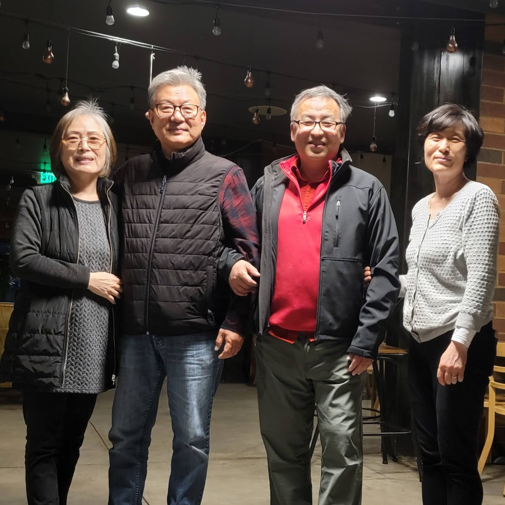

Ward Conference Notes
Bishop Barker and President Reeves spoke
Bishop Barker
Like Math Formula, if A=B and B=C then it must be that A=C If i love God and God loves others, then I must also love others.
Share the good things in life with others
We are perfectly positioned by who is Perfect
President Reeves - Music can nurture us
Was asked to sing in public on his mission. Was not comfortable singing in public
Was thinking it was for and about me. It was for a grieving young couple who just lost their newborn child.
He sang Abide With Me, 'Tis Eventide at the cemetery and no longer thought of himself nor heard the truck noise.
Lay aside distractions in life
Priesthood Lesson by a High Councilman
How do we find happiness
First Brother
Parents separated at 15, to live their own lives. Was on his own.
Grandfather gave 8000 in 1978 (roughly 37,000 today) Bought a car and went on a mission with that money
A son died at childbirth, he was 23 years old at the time Needed to console his wife.
Needed help.
He was like that young couple, one that lost child and President Reeves sang the hymn.
Second Brother
For a while in his life. His partner was loneliness and resentment Then the music changed, a new parter appeared
This time acceptance rather than resentment or loneliness
He was addicted to drugs
All through his experience, throuogh the undercurrent of reality or difficult situation, there was benevolence
Here overcame his addiction through the help of 12 steps1.
Step 1: Acceptance The 2nd Step: Hope The 3rd Step: Faith Step 4: Courage Step 5: Honesty The 6th Step: Patience Step 7: Humility Step 8: Willingness The 9th Step: Brotherly Love Step 10: Integrity Step 11: Self-discipline The 12th Step: Service
Discussed first 3 steps of The 12 Steps of Alcoholics Anonymous (AA)2
- We admitted we were powerless over alcohol-that our lives had become unmanageable.
- Came to believe that a Power greater than ourselves could restore us to sanity.
- Made a decision to turn our will and our lives over to the care of God as we understood Him.
Peace in Christ, Philippians 4:7
And the peace of God, which passeth all understanding, shall keep your hearts and minds through Christ Jesus.
Brother Choi is going on a mission
Brother Choi was baptized in Los Angeles, while I was serving there.
He will leave for Korea Busan mission next month.

Footnotes
https://royallifecenters.com/the-spiritual-principles-of-recovery-12-ways-you-can-practice-them-every-day/#:~:text=The%2012%20spiritual%20principles%20of%20recovery%20are%20as%20follows%3A%20acceptance,self%2Ddiscipline%2C%20and%20service.↩︎
https://recoverycentersofamerica.com/what-is-rehab-like/recovery-the-12-steps/↩︎